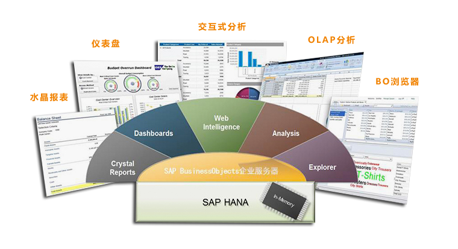

SAP HANA
发布日期:2014-9-1717:59:51
SAP高性能分析设备(HANA) 下一波SAP内存计算技术浪潮
强大的分析设备，带来实时洞察力
- 信息是当今企业的生命线。企业需要实时了解业务的运营状况。但是，可用于业务观测的运营数据量通常非常大，传统的磁盘系统无法在合理时间内完成处理。最后，
企业不得不被迫削减从运营应用程序导入分析模型的数据量，甚至最基本的分析也无法避免这种数据削减。这意味着运营应用程序与分析环境基本断开，导致对运营状况的了解大大滞后于相应数据的采集。
- 在利用信息来发现趋势和模式或完善计划、预测和财务结算流程时，企业还想使用灵活的分析模型。按照传统分析方法，在对海量数据进行建模时，需要预先做出假设，
将数据集减少到能够管理的范围内。但是简化的模型不能全面准确地反映运营数据，经常导致预测、计划或趋势分析效果欠佳，而这些分析对业务绩效的监控及相应措施的采用至关重要。
- SAP® HANA 让企业借助海量的详细信息，在业务进程当中分析业务运营。企业可以探索和分析来源于所有数据源的全部交易数据和分析数据。
运营数据在产生时由内存获取，并通过灵活的视图迅速将分析信息呈现给用户。外部数据可轻松的被添加至分析模型，与整个企业的数据进行整合。
-
SAP HANA能够带来的收益
SAP HANA提供多用途的内存应用设备，企业可以利用它即时掌握业务运营情况，从而对所有可用的数据进行分析，并对快速变化的业务环境做出迅速响应。
使用SAP HANA，企业可以即时访问相关信息，更快做出更加可靠的决策，并降低获取洞察力时对IT部门的依赖。
SAP HANA提供灵活、节约、高效、实时的方法管理海量数据。利用HANA，企业可以不必运行多个数据仓库、运营和分析系统，从而削减相关的硬件和维护成本。
SAP HANA将在内存技术基础上，为新的创新应用程序奠定技术基础，支持更高效的业务应用程序，如：计划、预测、运营绩效和模拟解决方案。
Strategic Workforce Planning是第一个在SAP HANA上运行的业务应用程序。该解决方案由SAP开发，充分利用对海量交易信息的高性能实时访问为用户服务。
-
SAP HANA的功能
通过SAP HANA可直接访问运营数据，而不影响SAP® ERP和其他运营系统的性能。企业可以近乎实时地将主要交易表格同步到内存中，
以便在分析或查找时能够轻松对这些表进行访问。一旦数据可通过内存访问，各个部门就可以从预订单据、销售线索、服务要求等大量列表中查找单个行项目，
而不会对运营系统造成任何影响。这种高效的建模流程支持提供明细行项目的直接访问模型，以及支持更为复杂的分析流程的分析模型。
SAP HANA提供从概念到分析的高效工作流程。该工作流涵盖整个流程，从识别相关运营数据（将原始数据转化为相关信息）开始，到在模型中生成按语义分组的信息，
最后是发布完成的模型。SAP HANA与传统分析模型的主要区别在于摒弃了任何物质化的东西，即，所有模型都是完全虚拟的，
均基于基本的具体运营数据计算结果。这样，模型就能够被方便的修改。
SAP HANA可以访问任何数据。当企业需要非SAP应用程序中的运营数据，或想在现有分析模型的基础上进行扩展时，任何数据源均可作为SAP HANA的数据基础。
使用SAP® BusinessObjects™ Data Services组件，可以将非SAP运营数据加载到SAP HANA内存中，这样，企业就可以通过极其精简的流程创建一个特定业务情景的完整视图。
SAP HANA添加了易用的建模经验来进一步提高业务用户的自主性。视图遵循语义规则，将原始运营数据转化成可以理解的信息，据此，
业务用户可以在基于Web的建模环境中自主地创建新分析模型。
SAP BusinessObjects的全部商务智能工具可以直接使用SAP HANA内存数据，使业务用户能够全面利用其所有高性能应用程序的洞察和分析功能。
但是，如果用户希望使用Excel或其他工具和应用程序进行数据分析，那么他们可以通过MDX、SQL等标准接口连接到SAP HANA。
SAP HANA为现有应用程序、运营系统或其他业务应用程序提供标准接口。这意味着SAP HANA不会因为连接到现有数据源而打乱现有系统架构，
而且它轻松利用现有BI客户端投资。作为一款完备的实时分析解决方案，SAP HANA可以帮您尽快获得收益。
